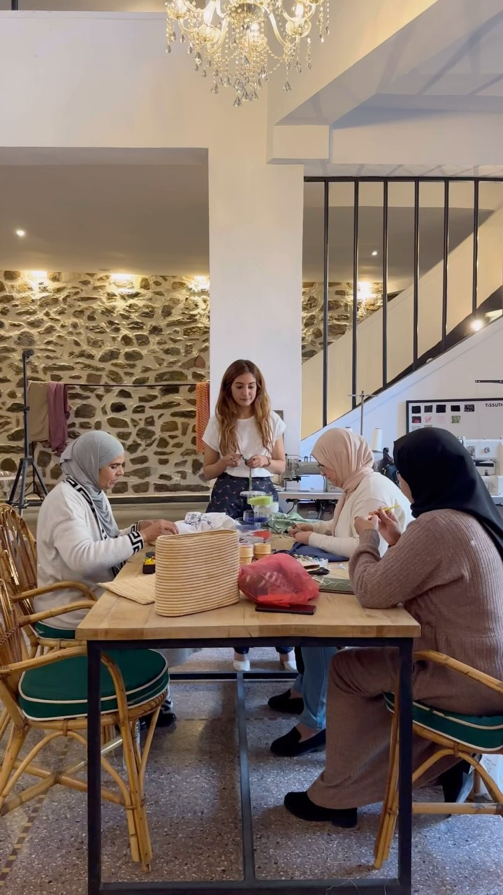
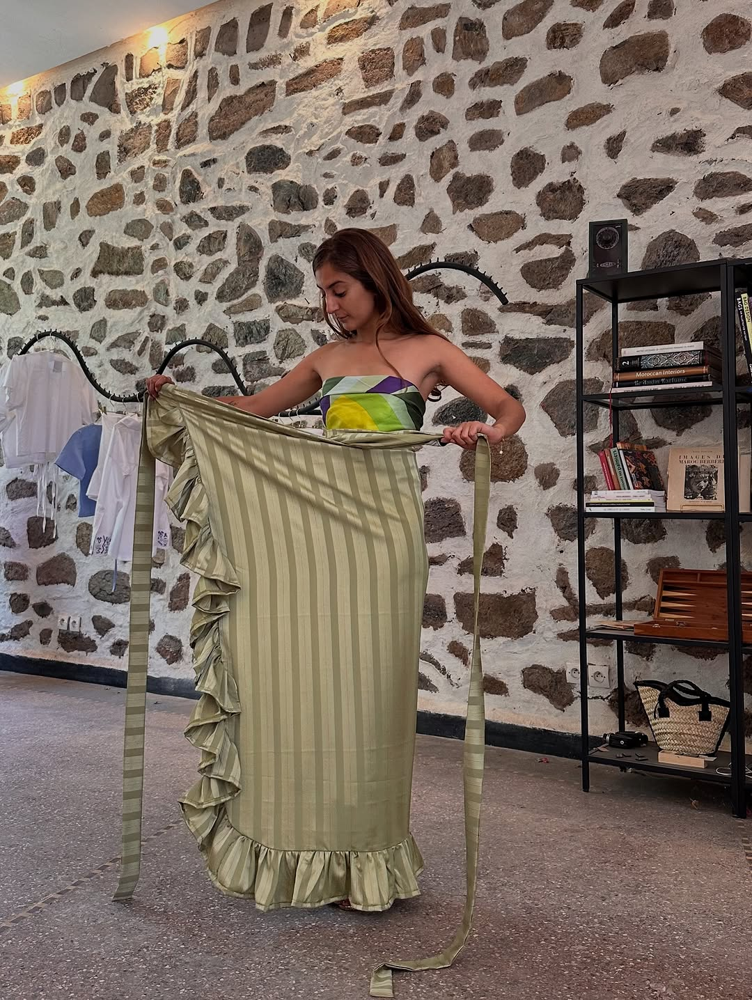
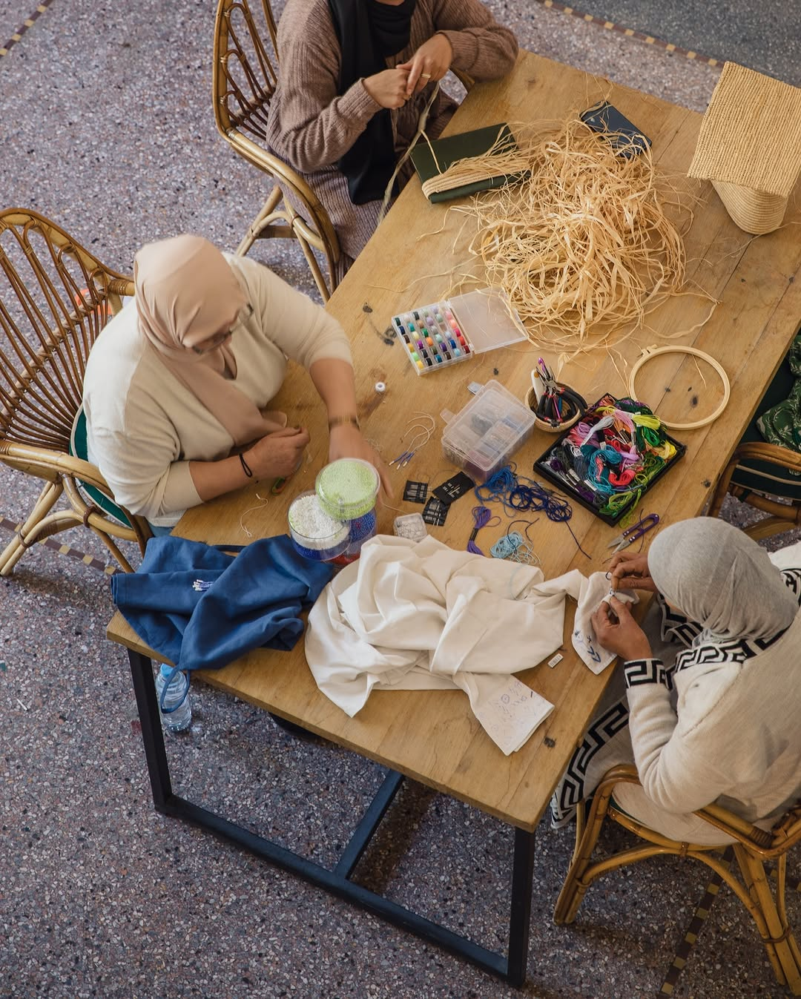
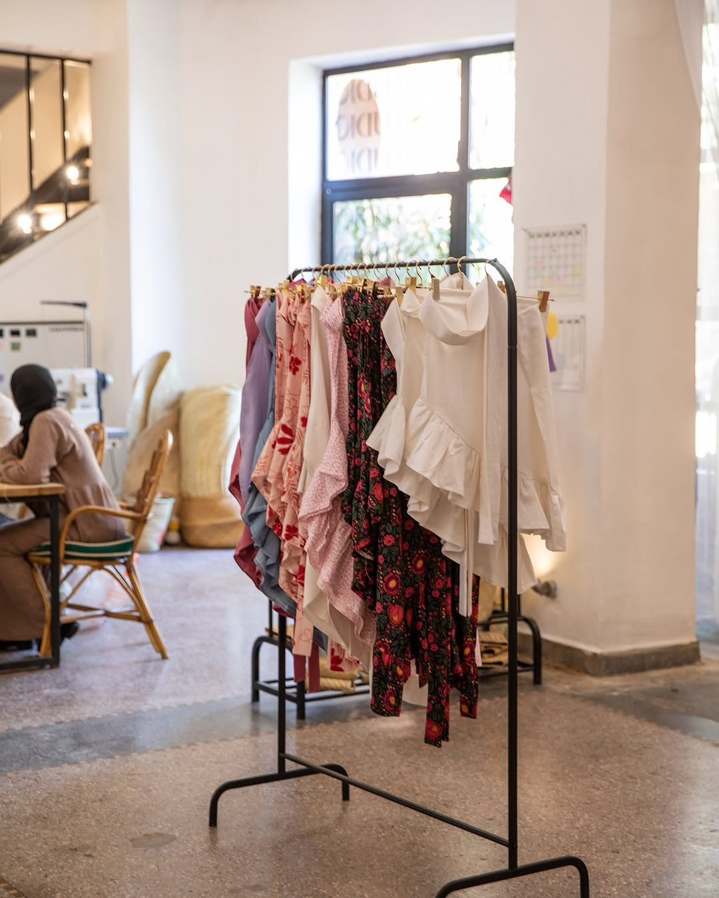
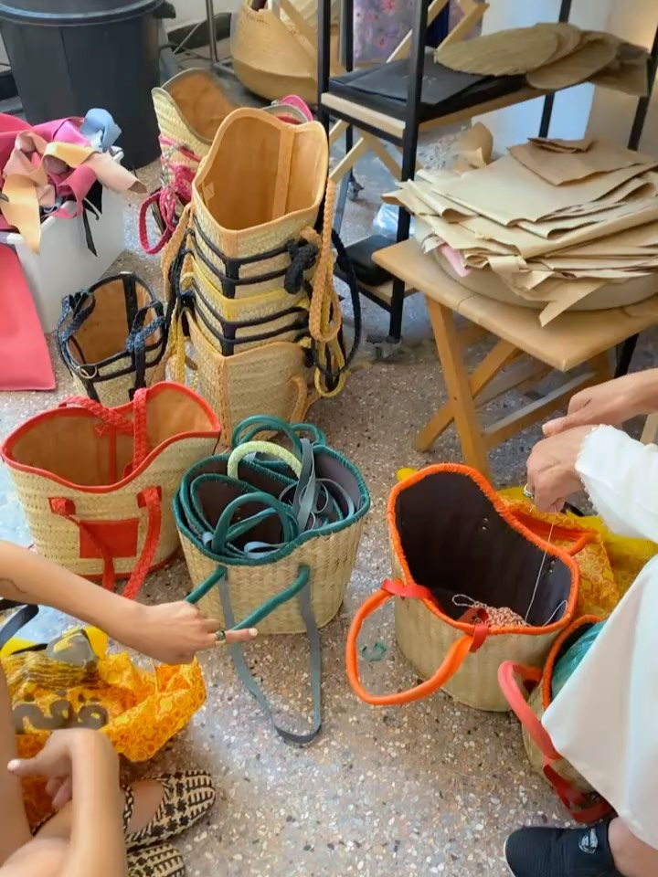

66 rue Yougoslavie, Guéliz · Marrakech
Le studio à GuélizThe Studio in GuélizEl studio en GuélizGuéliz'deki stüdyoالاستوديو في Guéliz
Une porte sur une rue de Guéliz — là où chaque pièce YZA commence et s'achève. Le raphia, le doum et la feuille de bananier arrivent bruts ; ils repartent en objets finis, un à un. Aucun moule, aucun raccourci. Juste des mains, du temps, et 37 ans de geste dans la pièce. Le studio est ouvert aux visiteurs : venez voir le travail en cours et repartez avec une pièce, directement des mains qui l'ont faite.One door on one street in Guéliz - where every YZA piece begins and ends. Raffia, doum and banana leaf arrive rough; they leave as finished objects, one at a time. No moulds, no shortcuts. Just hands, time, and 37 years of gesture in the room. The studio is open to visitors: come see the work in progress and carry a piece home from the very hands that made it.Una puerta en una calle de Guéliz — donde cada pieza YZA empieza y termina. La rafia, el doum y la hoja de banano llegan en bruto; salen como objetos terminados, uno a uno. Sin moldes, sin atajos. Solo manos, tiempo y 37 años de gesto en la sala. El studio está abierto a las visitas: ven a ver el trabajo en marcha y llévate una pieza de las mismas manos que la hicieron.Guéliz'de bir sokakta tek bir kapı — her YZA parçasının başladığı ve bittiği yer. Rafya, doum ve muz yaprağı ham gelir; birer birer bitmiş nesneler olarak çıkar. Kalıp yok, kestirme yok. Yalnızca odadaki eller, zaman ve 37 yıllık el emeği. Stüdyo ziyaretçilere açık: süren işi görmeye gelin ve bir parçayı onu yapan ellerden alıp götürün.بابٌ واحد في شارعٍ بـ Guéliz — حيث تبدأ كل قطعة YZA وتنتهي. تصل الرافيا والدوم وورق الموز خامًا؛ وتغادر أشياءَ مكتملة، واحدةً تلو الأخرى. لا قوالب، لا اختصارات. فقط أيادٍ ووقت و37 عامًا من الحرفة في الغرفة. الاستوديو مفتوح للزوّار: تعالَي لرؤية العمل وهو يجري، وعودي بقطعة من الأيادي ذاتها التي صنعتها.
« It's better in Marrakesh. »“It's better in Marrakesh.”
Venez voir le travailCome and see the workVen a ver el trabajoGelin, işi görünتعالَي وشاهدي العمل
Des sacs en plein tissage, des perles qu'on noue, du raphia qui sèche à la lumière. Poussez la porte — il y a presque toujours quelqu'un à l'établi, et presque toujours de l'eau sur le feu.Bags mid-weave, beads being knotted, raffia drying in the light. Push the door - there is almost always someone at the bench, and almost always a kettle on.Bolsos a medio tejer, cuentas que se anudan, rafia secándose a la luz. Empuja la puerta — casi siempre hay alguien en el banco, y casi siempre agua al fuego.Yarı örülmüş çantalar, düğümlenen boncuklar, ışıkta kuruyan rafya. Kapıyı itin — tezgâhta neredeyse her zaman biri vardır, ve neredeyse her zaman ocakta su.حقائب في منتصف الحياكة، خرزٌ يُعقد، ورافيا تجفّ في الضوء. ادفعي الباب — هناك دائمًا تقريبًا أحدٌ على الطاولة، وغالبًا إبريق شايٍ على النار.

Mercredi – dimanche 12 h – 20 h
Lundi 12 h – 16 h · mardi ferméWednesday - Sunday 12h - 20h
Monday 12h - 16h · Tuesday closedMiércoles – domingo 12 h – 20 h
Lunes 12 h – 16 h · martes cerradoÇarşamba – pazar 12.00 – 20.00
Pazartesi 12.00 – 16.00 · salı kapalıالأربعاء – الأحد 12 – 20
الإثنين 12 – 16 · الثلاثاء مغلق



Les femmes de l'atelierThe Women of the AtelierLas mujeres del atelierAtölyenin kadınlarıنساء الأتيليه
La Fatima crochète le raphia depuis 37 ans. Elle le lit comme d'autres lisent une page — à la tension, à la densité, à la façon dont le fil tient. Ses mains savent avant elle.La Fatima has crocheted raffia for 37 years. She reads it the way others read a page - by tension, density, the way the thread holds. Her hands know before she does.La Fatima lleva 37 años tejiendo la rafia a ganchillo. La lee como otras leen una página — por la tensión, la densidad, la forma en que el hilo aguanta. Sus manos saben antes que ella.La Fatima 37 yıldır rafyayı tığla örüyor. Onu başkalarının bir sayfayı okuduğu gibi okur — gerginliğinden, yoğunluğundan, ipin tutuşundan. Elleri ondan önce bilir.تحوك لالة فاطمة الرافيا بالكروشيه منذ 37 عامًا. تقرأها كما يقرأ غيرها صفحة — من شدّها، وكثافتها، وطريقة تماسك الخيط. يداها تعرفان قبلها.
À ses côtés, Fatima façonne à la main les pompons de perles dorées et brode les signes berbères qui signent chaque pièce Jawhara, et Fatimzahra coupe les tissus et coud chaque vêtement. Souad, Kawtar et Wissal travaillent à leurs côtés. Ce qu'elles réalisent, aucune machine ne sait tout à fait le refaire. Et à la boutique, Hiba vous accueille pour vous présenter l'univers YZA et vous aider à trouver la pièce parfaite.Beside her, Fatima hand-crafts the golden bead tassels and embroiders the Berber signs that sign every Jawhara piece, while Fatimzahra cuts the fabrics and sews every garment. Souad, Kawtar and Wissal work alongside them. What they make cannot quite be replicated by a machine. And in the boutique, Hiba welcomes you, introduces the YZA universe and helps you find the perfect piece.A su lado, Fatima confecciona a mano las borlas de cuentas doradas y borda los signos bereberes que firman cada pieza Jawhara, y Fatimzahra corta los tejidos y cose cada prenda. Souad, Kawtar y Wissal trabajan a su lado. Lo que hacen no puede replicarlo del todo una máquina. Y en la boutique, Hiba te recibe, te presenta el universo YZA y te ayuda a encontrar la pieza perfecta.Yanında, Fatima altın boncuklu püskülleri elle yapar ve her Jawhara parçasını imzalayan Berberi işaretleri işler; Fatimzahra ise kumaşları keser ve her giysiyi diker. Souad, Kawtar ve Wissal onların yanında çalışır. Yaptıklarını bir makine tıpatıp kopyalayamaz. Butikte ise Hiba sizi karşılar, YZA evrenini tanıtır ve mükemmel parçayı bulmanıza yardımcı olur.إلى جانبها، تصنع فاطمة يدويًا شراشيب الخرز الذهبي وتطرّز الرموز الأمازيغية التي توقّع كل قطعة Jawhara، وتقصّ فاطمة الزهراء الأقمشة وتخيط كل قطعة ملابس. وتعمل سعاد وكوثر ووصال إلى جانبهنّ. ما يصنعنه لا تستطيع آلة أن تكرّره تمامًا. وفي البوتيك، تستقبلك هبة لتقدّم لك عالم YZA وتساعدك في العثور على القطعة المثالية.
Toute l'entreprise YZA est 100 % féminine — de l'atelier à la boutique. Chaque pièce que vous portez soutient des mains spécialisées et un savoir-faire qui demande des décennies à maîtriser — et une rémunération deux fois supérieure au taux du marché local, pour que ce savoir-faire fasse vivre celles qui le portent.The whole YZA company is 100% women-run — from the atelier to the boutique. Every piece you carry supports specialised hands and a craft that takes decades to master — paid at double the local market rate, so that skill actually supports the women who hold it.Toda la empresa YZA es 100 % femenina — del atelier a la boutique. Cada pieza que llevas sostiene manos especializadas y un oficio que tarda décadas en dominarse — pagado al doble de la tarifa del mercado local, para que ese saber sostenga a quienes lo llevan.YZA'nın tamamı %100 kadın bir şirkettir — atölyeden butiğe. Taşıdığınız her parça, uzman elleri ve ustalaşması on yıllar süren bir zanaatı destekler — yerel piyasa ücretinin iki katı ödenerek, böylece bu emek onu taşıyan kadınları gerçekten geçindirsin.شركة YZA بأكملها نسائية 100٪ — من الأتيليه إلى البوتيك. كل قطعة تحملينها تدعم أيادي متخصّصة وحرفةً يستغرق إتقانها عقودًا — بأجرٍ ضعف السعر المحلي، لتكون هذه الحرفة سندًا حقيقيًا لمن تحملنها.
Arts & matièresArts & materialsArtes y materialesSanatlar ve malzemelerفنون وموادّ
Raphia, doum, feuille de bananier — et le tissu Jawhara.Raffia, doum, banana leaf — and the Jawhara fabric.Rafia, doum, hoja de banano — y el tejido Jawhara.Rafya, doum, muz yaprağı — ve Jawhara kumaşı.رافيا، دوم، ورق موز — وقماش Jawhara.
Trois fibres végétales, sourcées et séchées, confiées à l'atelier. Chacune plie différemment, prend la couleur différemment, vieillit différemment. Les tisseuses savent au toucher — quel brin pour une base, lequel pour le bord d'une anse, à quelle tension tirer pour tenir la forme des années durant.Three plant fibres, sourced and dried, handed to the atelier. Each bends differently, holds colour differently, ages differently. The weavers know by touch - which strand for a base, which for a handle edge, how tight to pull to hold shape for years.Tres fibras vegetales, seleccionadas y secadas, entregadas al atelier. Cada una se dobla distinto, toma el color distinto, envejece distinto. Las tejedoras saben al tacto — qué hebra para una base, cuál para el borde de un asa, con cuánta tensión tirar para mantener la forma durante años.Üç bitkisel lif; tedarik edilip kurutulur ve atölyeye verilir. Her biri farklı bükülür, rengi farklı tutar, farklı yaşlanır. Dokumacılar dokunuşla bilir — taban için hangi tel, sap kenarı için hangisi, yıllarca biçimi korumak için ne kadar sıkı çekileceğini.ثلاثة ألياف نباتية، تُنتقى وتُجفّف وتُسلَّم للأتيليه. كلٌّ ينثني بطريقة، ويمسك اللون بطريقة، ويشيخ بطريقة. تعرف النسّاجات باللمس — أيّ خصلة للقاعدة، وأيّها لحافة المقبض، وبأيّ شدٍّ يُسحب ليحفظ الشكل سنوات.
Le doum est une ressource renouvelable : on le taille pour que le palmier continue de pousser, on ne l'arrache pas. Séché au soleil puis tissé entièrement à la main, il traverse plus de 30 ans — et redevient compost en fin de vie. Rien ne se perd.Doum is a renewable resource: it's trimmed so the palm keeps growing, never uprooted. Sun-dried, then woven entirely by hand, it lasts over 30 years — and returns to compost at the end of its life. Nothing wasted.El doum es un recurso renovable: se recorta para que la palmera siga creciendo, nunca se arranca. Secado al sol y tejido enteramente a mano, dura más de 30 años — y vuelve al compost al final de su vida. Nada se pierde.Doum yenilenebilir bir kaynaktır: hurma ağacı büyümeye devam etsin diye kesilir, asla sökülmez. Güneşte kurutulup tamamen elle dokunur, 30 yıldan fazla dayanır — ve ömrünün sonunda komposta döner. Hiçbir şey boşa gitmez.الدوم مورد متجدد: يُقلَّم كي تستمر النخلة في النمو، ولا يُقتلَع أبدًا. يُجفَّف في الشمس ثم يُنسَج يدويًا بالكامل، ويدوم أكثر من 30 عامًا — ليعود سمادًا في نهاية عمره. لا شيء يُهدَر.
Une finition cuir à chaque bord, là où le sac s'use le plus — issu de tanneries locales marocaines, pas d'un cuir végan importé qui n'aurait aucun sens pour une marque locale. Un travail lent, fait pour survivre d'une décennie à la mode jetable. Plus de mains, moins de machines.A leather finish at every edge where a bag wears hardest — sourced from local Moroccan tanneries, not an imported vegan leather that wouldn't make sense for a local brand. Slow work, made to outlast fast fashion by a decade. More hands, less machines.Un acabado en cuero en cada borde, donde el bolso se desgasta más — de curtidurías locales marroquíes, no de un cuero vegano importado que no tendría sentido para una marca local. Trabajo lento, hecho para durar una década más que la moda rápida. Más manos, menos máquinas.Çantanın en çok yıprandığı her kenarda deri finiş — yerel Fas tabakhanelerinden, yerel bir marka için anlamsız olacak ithal vegan deriden değil. Yavaş bir iş, hızlı modayı on yıl geride bırakmak için yapılmış. Daha çok el, daha az makine.تشطيب جلدي عند كل حافة حيث تتآكل الحقيبة أكثر — من مدابغ مغربية محلية، لا من جلد نباتي مستورد لا معنى له لعلامة محلية. عملٌ بطيء، صُنع ليدوم عقدًا بعد أن تزول الموضة السريعة. أيادٍ أكثر، آلات أقل.
Et le tissu : la collection Jawhara habille tops, jupes paréo et pantalons — coupés et cousus dans l'atelier, brodés de signes berbères et finis de pompons de perles à la main. Quatre gestes signent chaque pièce YZA : le tressage du doum, le crochet du raphia, la broderie perlée, la couture.And the fabric: the Jawhara collection dresses tops, pareo skirts and trousers — cut and sewn in the atelier, embroidered with Berber signs and finished with hand-made bead tassels. Four gestures sign every YZA piece: doum weaving, raffia crochet, beaded embroidery, and sewing.Y el tejido: la colección Jawhara viste tops, faldas pareo y pantalones — cortados y cosidos en el atelier, bordados con signos bereberes y rematados con borlas de cuentas hechas a mano. Cuatro gestos firman cada pieza YZA: el trenzado del doum, el ganchillo de la rafia, el bordado con cuentas y la costura.Ve kumaş: Jawhara koleksiyonu topları, pareo etekleri ve pantolonları giydirir — atölyede kesilip dikilir, Berberi işaretlerle işlenir ve elle yapılmış boncuklu püsküllerle tamamlanır. Her YZA parçasını dört el işi imzalar: doum örme, rafya tığ işi, boncuklu nakış ve dikiş.والقماش: مجموعة Jawhara تلبس التوبات وتنانير الباريو والسراويل — تُقصّ وتُخاط في الأتيليه، وتُطرَّز برموز أمازيغية وتُنهى بشراشيب خرز مصنوعة يدويًا. أربع حرفٍ توقّع كل قطعة YZA: تضفير الدوم، وكروشيه الرافيا، والتطريز المخرَّز، والخياطة.

Repartez avec une pièceTake a piece homeLlévate una piezaBir parçayı evine götürخذي قطعة معك
Que vous veniez à Guéliz ou que vous commandiez de loin, chaque pièce sort des mêmes mains. Éditions limitées — une fois parties, elles ne reviennent pas.Whether you come to Guéliz or shop from afar, every piece leaves the same hands. Limited editions - once they're gone, they're gone.Tanto si vienes a Guéliz como si compras desde lejos, cada pieza sale de las mismas manos. Ediciones limitadas — una vez agotadas, no vuelven.İster Guéliz'e gelin ister uzaktan alışveriş yapın, her parça aynı ellerden çıkar. Sınırlı sayıda — bittiğinde, biter.سواء جئتِ إلى Guéliz أو تسوّقتِ من بعيد، كل قطعة تخرج من الأيادي نفسها. إصدارات محدودة — وما إن تنفد حتى تختفي.